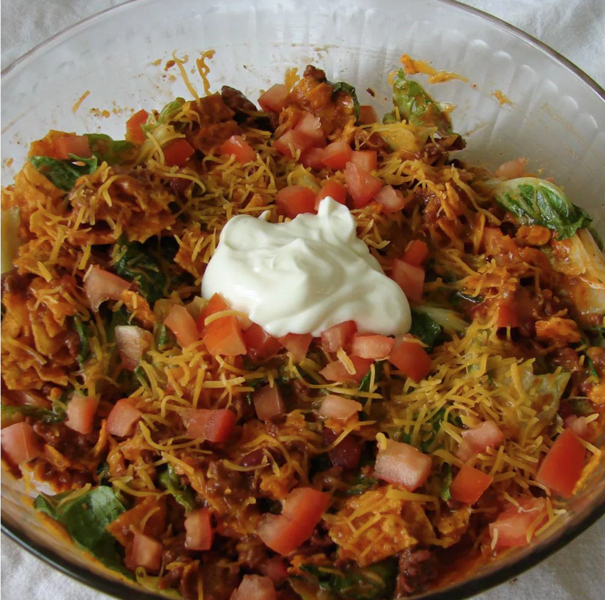

Taco Salad

Description
Ingredients
- 1 pound lean ground beef
- 1 (16 ounce) can chili beans
- 1 (16 ounce) bottle French dressing
- 1 (1.25 ounce) package taco seasoning mix
- 1 (14.5 ounce) package tortilla chips
- 1 head iceberg lettuce, shredded
- 2 cups shredded Cheddar cheese
- 1 cup chopped tomatoes
- ½ cup prepared salsa
- 4 tablespoons sour cream
Steps
- Heat a large skillet over medium-high heat. Cook and stir ground beef in the hot skillet until browned and crumbly, 5 to 7 minutes. Drain and discard grease. Stir in chili beans, French-style dressing, and seasoning mix. Fill the empty dressing bottle 2/3 full of water and add to the skillet. Bring to a boil, reduce heat, and simmer for 15 minutes.
- Crush the bag of chips, open the bag, and toss crushed chips into a large bowl. Add lettuce, cheese, and tomatoes. Pour meat mixture into the bowl; mix well. Top with salsa and sour cream.